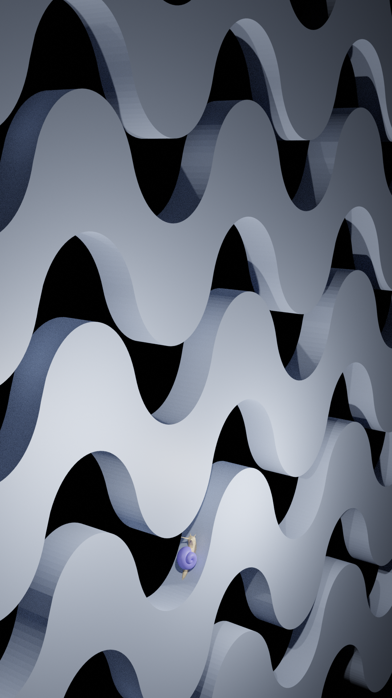

Student at Codam Coding College - Not your average programmer
My name is Malou and I'm a software engineering student at Codam Amsterdam. Before Codam I developed myself within several Dutch cultural industries. My goal is to combine technologie, art and storytelling to create impressive and immersive experiences.
-
-
FDF
Create a rotating wireframe from numbers
-

Blender Studies
Learning Blender by creating my spirite animal
-

Fract'ol
Interactive implementation of different fractals
-

wolf3d
My own version of the classic game Wolfenstein 3d from scratch
-
-

OpenGL
First steps in OpenGL
-

wolf3d
Team project: we build a game based on the old school graphic techniques of Duke Nukem and Doom. From scrath ofcourse.